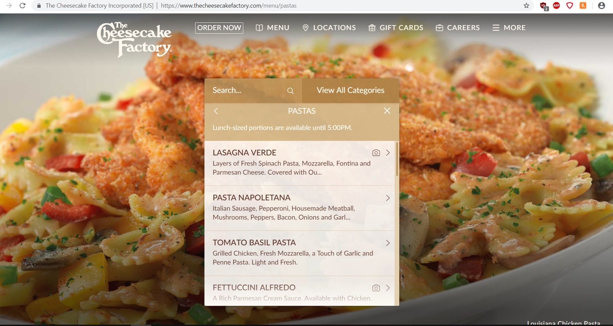
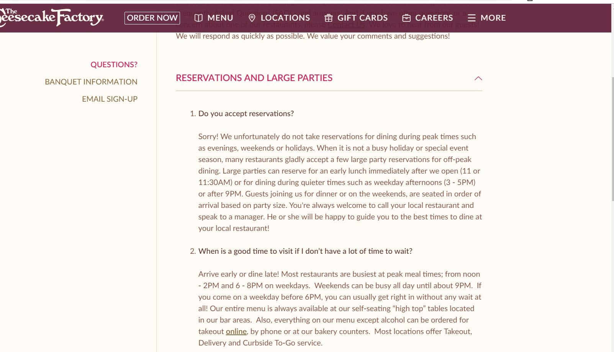
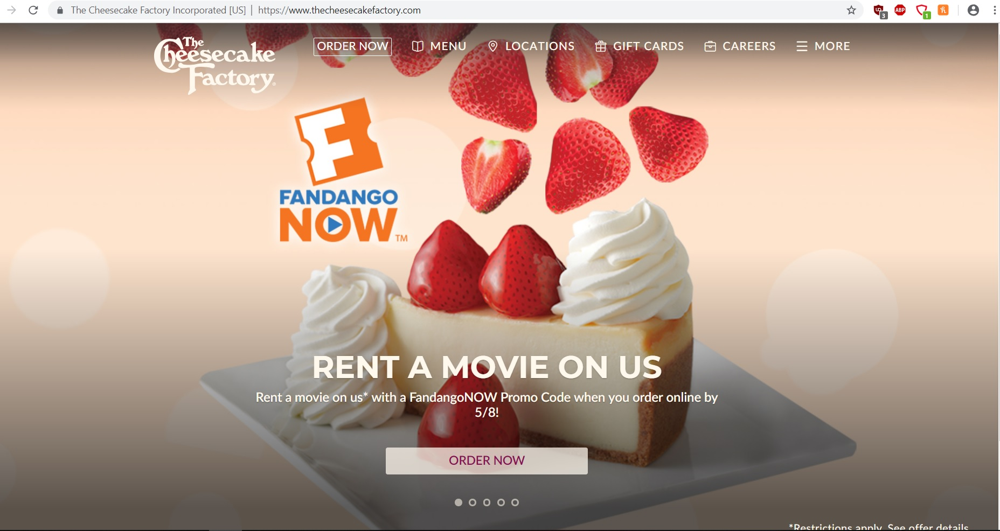

For the user test of a website I decided to go with the Cheesecake Factory restaurant site. This is a pretty standard site across the country and I think it is easy to find in most cities. Those I chose to test had all heard of the Cheesecake Factory and out of the 3 just 1 person had not eaten there. Person 1 is my mom who is a 52 year-old woman living in Miami. Person 2 is my friend living in El Paso, TX, female age 32, and person 3 is male living in Seattle and he has never eaten at the Cheesecake Factory is age age 31. I asked each of the testers what they look for most when visiting a restaurant site and menu with costs along with reservations was what they all mentioned as top searching points when visiting such sites. So those 2 features will be what the testers will focus on while visiting the site to see how easy they are to find and use and how much information they website has and how it is presented especially the menu aspect.
Testing Script
1. How easy does the Home Page seem for you?
2. Try and make a reservation. How long did it take?
3. How easy is it to navigate the menu and learn about their items?
4. What would you change?
User Experience By Testers
The page had the menu clearly at the top bar menu. Over all it was easy to see what they had and by clicking on each dish it was easy to see what was in it and what the sides were. Each tester though pointed out that there were no prices listed. One tester figured you would have to look for the location. He spent several minutes trying to find a way to make that connection work, but even when entering the specific restaurant location, there are no prices on the menu and one of my testers pointed it out that the menu may even vary from region to region, but the general menu must be what they all serve.
The reservations section was nowhere to see on site. All the testers pointed this out. My mom figured you just had to call, but another tester found that by clicking on the FAQ section one of the first questions is if there is a way to make reservations and the answer was no. Apparently Cheesecake Factory does not take them so they are first come first serve.
User Results and Suggestions
All testers rated the site as ok, but not excellent. One user did not like the pop up menu design and thought it would benefit by just taking you to a menu page. All users agreed on making it more obvious on site that they don’t take reservations. Home page would be best one user pointed out. They seem to really be driving their delivery service on the front page which my mom thought made the restaurant feel like a fast food place.
Overall they all agreed that for being such a big name they should improve the site and find a way to have the costs for each location. One user pointed out that a number of chain restaurants do this already. For the most part everything else was easy to find, but a few tweaks here and there would definitely boost the information that most people seek.